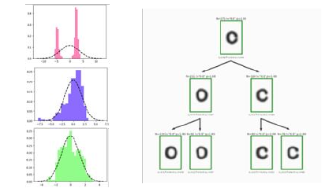
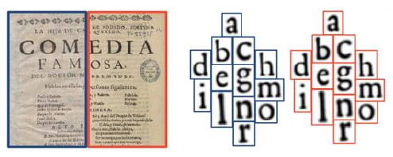
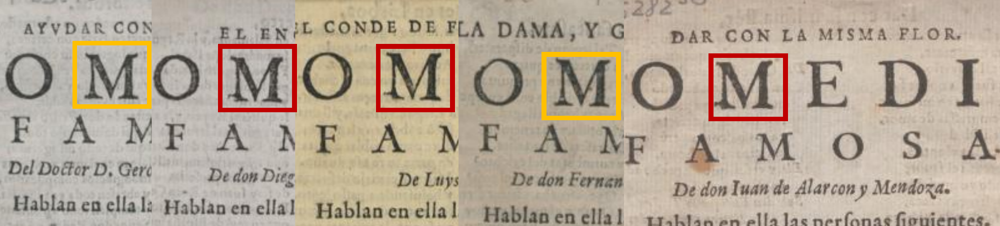
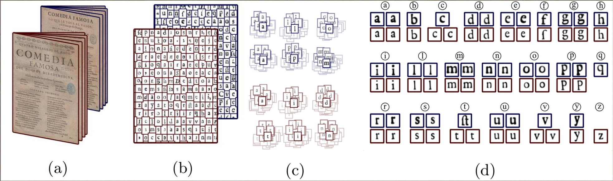
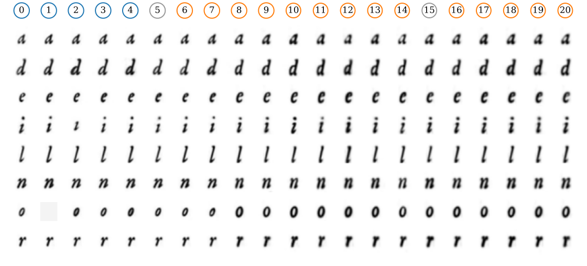
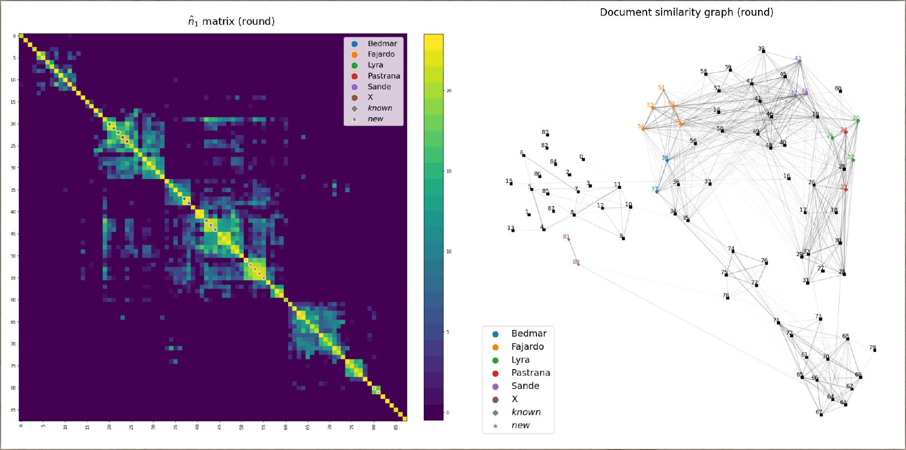
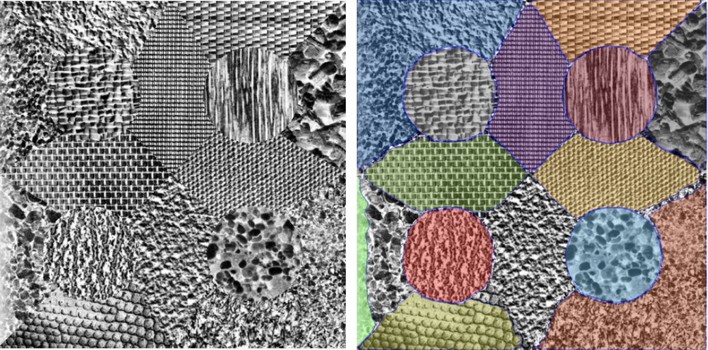
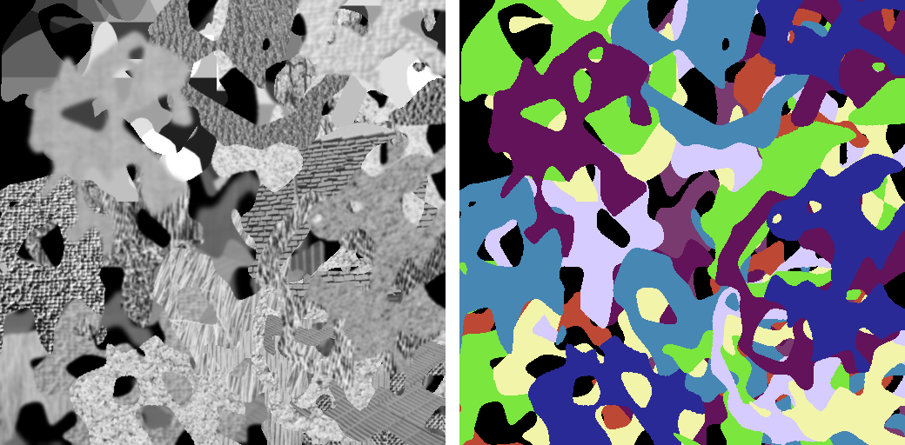

De la vision par ordinateur aux LLMs : que vaut vraiment l’OCR aujourd’hui ?








| step | what | status |
|---|---|---|
| generator | dead leaves (from VibrantLeaves), real Brodatz / ALOT textures, difficulty presets | done |
| Abstract SAM | encoder from scratch, prompt-free decoder, boundary + Mumford–Shah-like loss | running |
| benchmark | levels L1–L5, up to natural images; SAM in automatic mode | planned |
| explain | one variable at a time, ablations, the same tests on SAM | planned |
| seminar | idea | in my project (historical Chinese prints, TKH) |
|---|---|---|
| Mowlavi | cluster characters, correct by agreement | a k-NN graph over every glyph; labels corrected by diffusion on it |
| Gardella | a contrario NFA | graph edges kept by an a contrario test on glyph distances |
| Belzarena | Learnable Typewriter | ported, trained on TKH: test CER 1.44 % vs 8.87 % for CHAT; characters seen < 5 times are never read |
| Leon | specified synthetic data | glyph boxes from CRAFT refined by the SAM 3 tracker; a font-rendered generator would make glyph segmentation a controlled experiment |